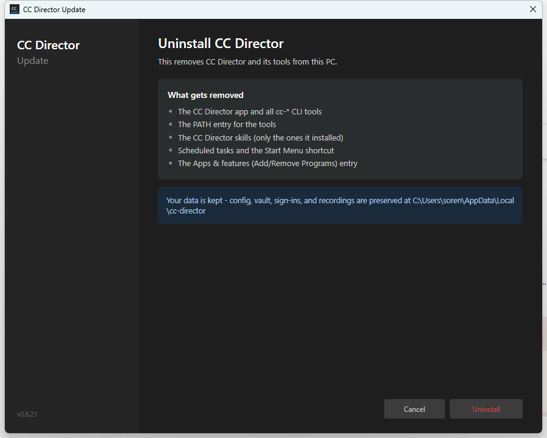
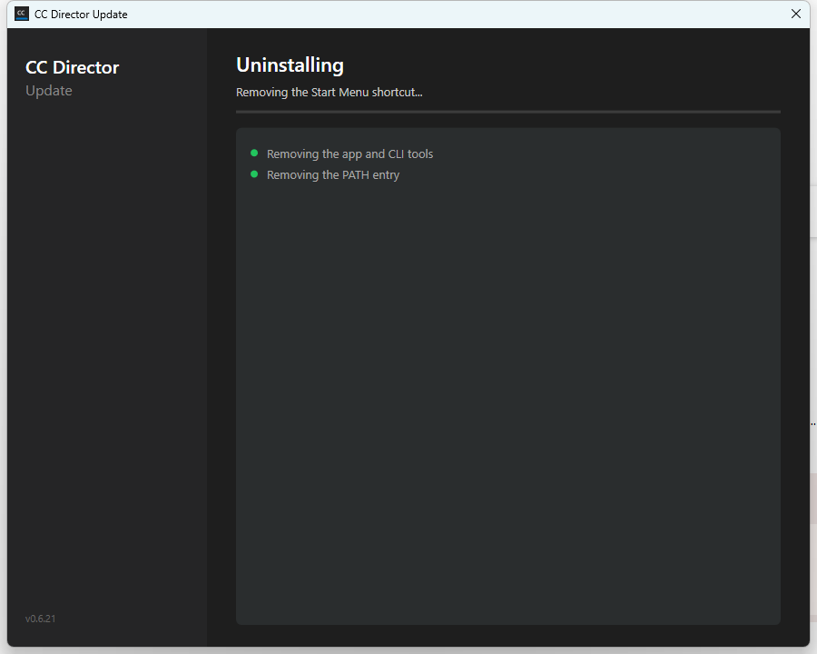
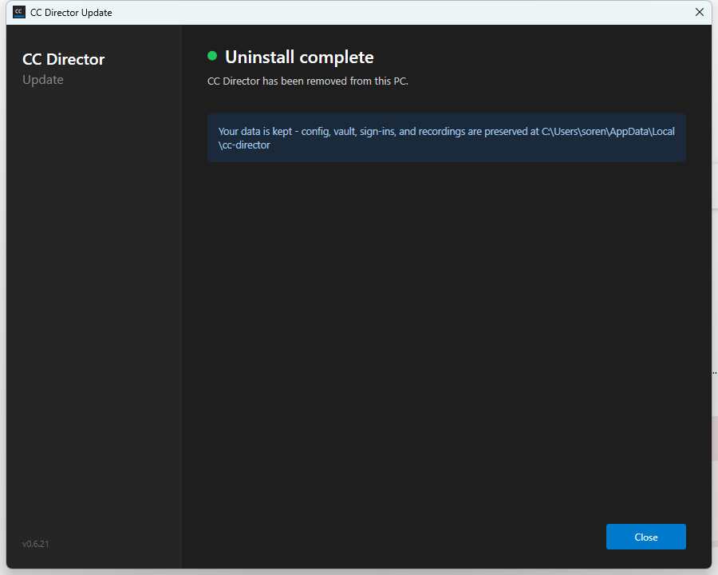

tools/cc-director-setup) - replaces the raw MessageBox pop-ups + frozen window with an in-wizard confirm → live progress → completion flow.MessageBox "Uninstall CC Director? ... Continue?" (the ugly pop-up).MessageBox for the result.Uninstaller.Apply(role, IProgress<string>? progress) reports a friendly message as each phase begins (back-compat - the param is optional).UninstallStep with three views - confirm, live progress, completion - matching the install flow. No MessageBox.
"What gets removed" list + a "your data is kept" note; Cancel + a red Uninstall button.

Current action ("Removing the Start Menu shortcut...") + an indeterminate bar + completed steps accumulating with green dots.

Green dot + "Uninstall complete", a one-line summary, the data-kept note, and a Close button. (On a partial failure it instead shows the specific items that could not be removed.)
The three views were screenshotted live by driving the wizard with a FAKE runner (no real removal) via a temporary, env-var-gated demo trigger that was removed before commit. The real destructive end-to-end is verified on a disposable machine (same as the rest of #257).
Setup wizard builds clean (0/0); engine Uninstaller tests pass.